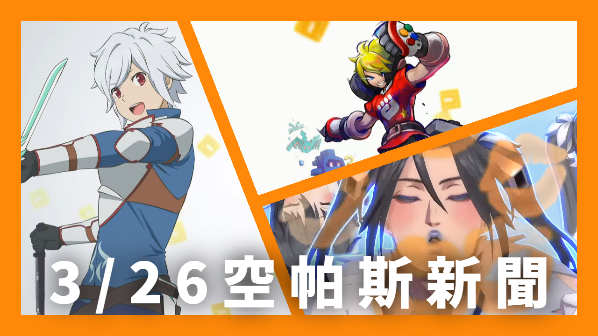
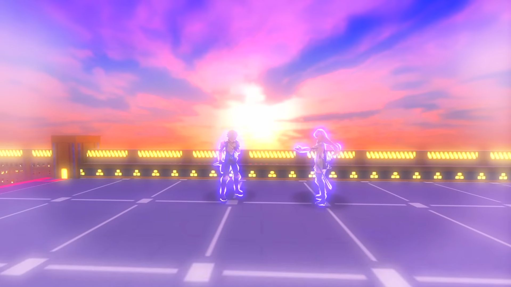

3/26空帕斯新聞：貝爾‧克朗尼、4月十文字中賽季

「在地下城尋求邂逅是否搞錯了什麼IV」合作！新角色追加－貝爾‧克朗尼
「在地下城尋求邂逅是否搞錯了什麼IV」合作即將在3/27維修後開始，本次追加新角色－貝爾‧克朗尼，職業為速職。本次新英雄的特色是長距離DA、快速累積HS量表。

本次合作也將新增兩張新效果的UR卡，分別是 %傷近奪 與 帶止，詳細請參閱合作詳細情報專欄。
讓我們期待貝爾與愛絲在空帕斯中共同戰鬥的畫面吧！